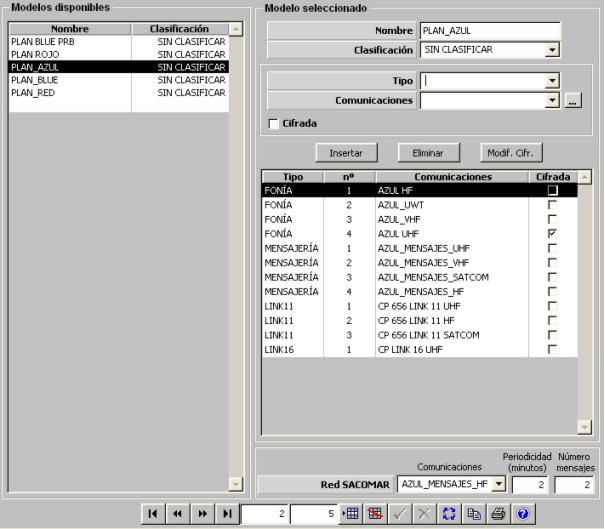

Planes de Frecuencias

Los planes de frecuencia disponibles se especifican mediante una Lista de Redes de Comunicaciones y los datos de la red SACOMAR. Cada una de las redes de la lista se define mediante un identificador de la Red, un modelo de comunicaciones y se especifica también si es cifrada o no.
En esta ventana se muestra también la lista de redes que compone el plan de frecuencias.
Descripción de los parámetros que definen la Red:
Tipo: Este parámetro determina el tipo de red de comunicaciones que se está definiendo y puede tomar los siguientes valores:
Comunicaciones: Este parámetro determina el equipo de comunicaciones asociado a la red de comunicaciones que se está definiendo. Sólo se podrán seleccionar BD de comunicaciones cuya banda sea compatible con el tipo de red seleccionado, según la siguiente tabla:
| Tipo de Red | Banda |
| Fonía | HF, UHF, VHF, SATCOM, UWT |
| Mensajería | HF, UHF, VHF, SATCOM |
| Link-11 | HF, UHF, VHF, SATCOM |
| Link-16 | UHF |
Cifrada: Este parámetro determina si la red que se está definiendo es cifrada o no.
En la lista de redes de comunicaciones se muestra la siguiente información (columnas):
Tipo: Tipo de Red.
Nº: Identificador de la Red.
Comunicaciones: Nombre de la BD de Comunicaciones.
Cifrada: Indica si es cifrada o no.
Para agregar una nueva red a esta lista, se debe definir la red especificando los campos Tipo, Comunicaciones, y Cifrada, y pulsar el botón Insertar. La nueva red será incluida en la lista de redes.
Para eliminar una red de la lista, se debe seleccionar dicha red en la lista correspondiente y pulsar el botón Eliminar.
El botón Modif. Cifr. permite intercambiar el estado de la red seleccionada entre cifrado y no cifrado.
Datos de la Red SACOMAR:
Comunicaciones: Este parámetro determina el equipo de comunicaciones asociado a la red SACOMAR. Sólo se podrán seleccionar BD de comunicaciones de tipo Mensajería incluidas en el Plan de Frecuencias cuya banda sea SATCOM o HF.
Periodicidad: Este parámetro determina la periodicidad con la que esta red procesa los mensajes.
Unidades: minutos
Rango: 0 – 9999
Nº Mensajes: Este parámetro determina la cantidad de mensajes que se envía en cada periodo.
Unidades: ---
Rango: 0 – 999